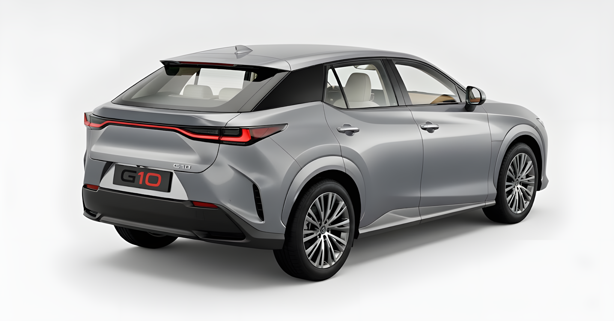
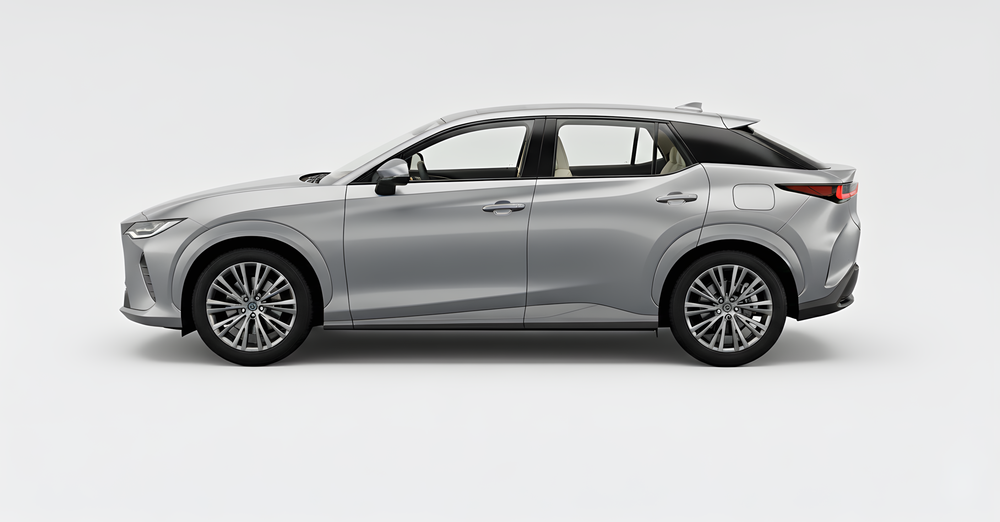
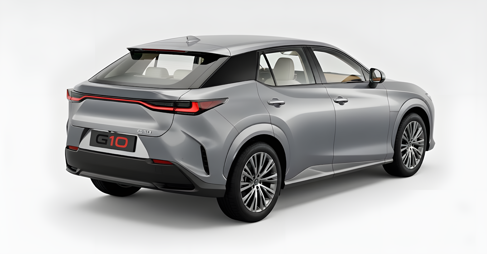
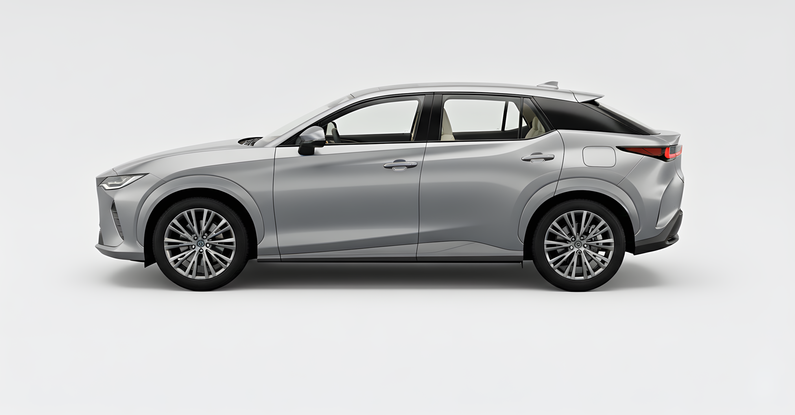

Model MZ
Design
 



The Model MZ features a modern electric SUV design focused on aerodynamics and efficiency. Sharp LED lighting, a closed front grille, and smooth body lines reduce drag while maintaining a premium and futuristic appearance.
Performance
Dual electric motors produce approximately 313 horsepower, enabling all-wheel drive capability. The Model MZ accelerates from 0-100 km/h in around 5.3 seconds, delivering smooth, quiet, and responsive driving performance.
Range & Charging
Powered by a 71.4 kWh lithium-ion battery, the Model MZ offers up to 440 km of WLTP-estimated range. Fast DC charging allows the battery to recharge from 10% to 80% in approximately 30 minutes, making long-distance travel more convenient.
Interior
The interior of the Model MZ combines sustainability with luxury. High-quality recycled materials, ambient lighting, a digital instrument cluster, and a large central touchscreen. Creates a calm and modern cabin environment for both driver and passengers.
Specifications
| Drivetrain | Dual-Motor AWD |
| Total Power | 313 HP |
| 0-100 km/h | 5.3 s |
| Battery Capacity | 71.4 kWh |
| Range (WLTP) | Up to 440 km |
| Charging (DC) | Up to 150 kW |
| Energy Consumption | 180 Wh/km |
| Weight | 2,100 kg |